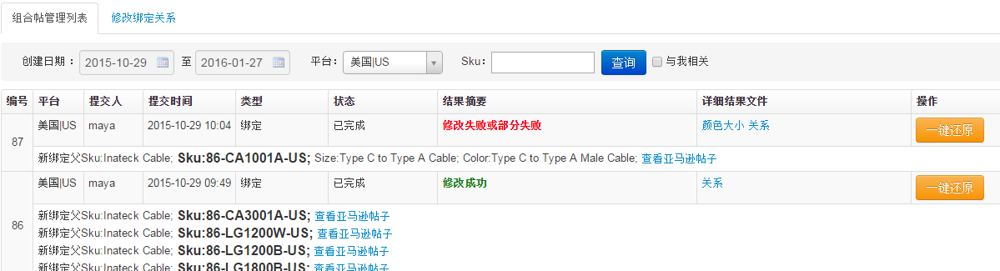
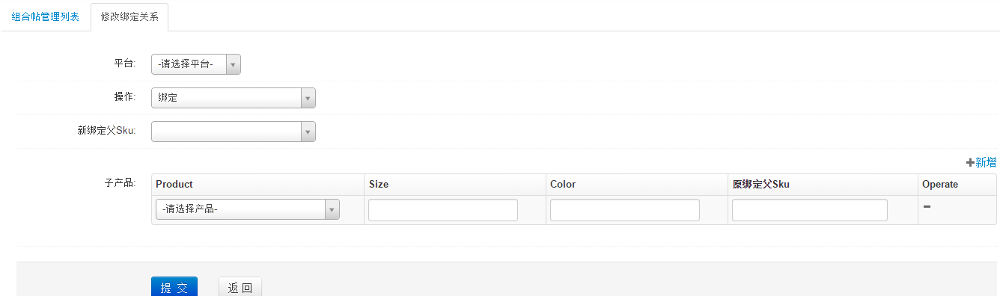
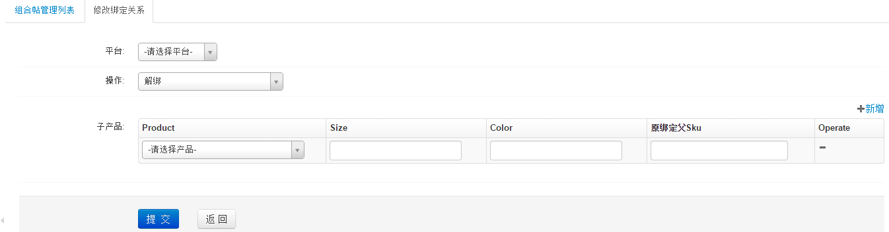
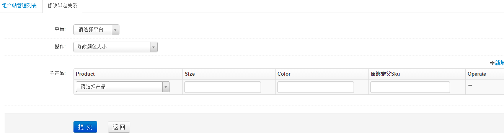

帖子关系编辑
帖子关系编辑包含帖子绑定、帖子解绑和帖子修改颜色大小操作
组合帖管理列表:

- 针对帖子修改关系出现404情况，可以点击一键还原按钮，进入帖子还原界面，确认所有查询出帖子内容正确性，保存即可删除原404帖，重新上传新帖。新帖关系不存在，需重新修改。
修改绑定关系:
- 绑定

- 点击新增，支持批量绑定母帖
- 选择子产品会及时查询最新的color和size相关信息，子产品的color和size信息要和绑定的新父Sku属性一致，如父Sku是variationTheme是size,子产品size是必填项
- 解绑

- 点击新增，支持批量解绑操作
- 解绑子产品必须存在原绑定父Sku,size、color和原父Sku都是查询的最新亚马逊后台信息
- 修改颜色大小

- 点击新增，支持批量修改颜色大小
- 选择Sku，会自动查询出亚马逊后台最新size、color和原父Sku信息